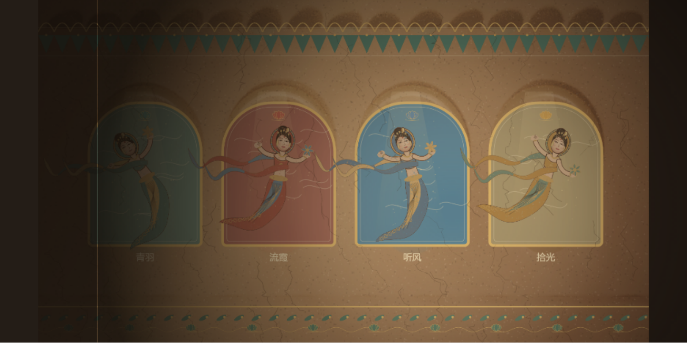
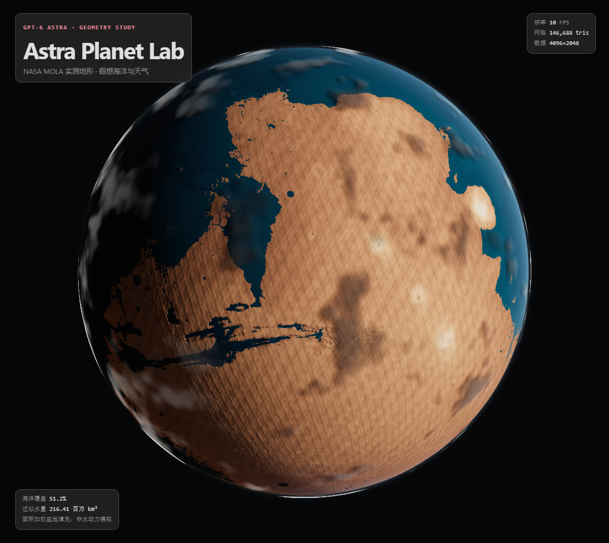
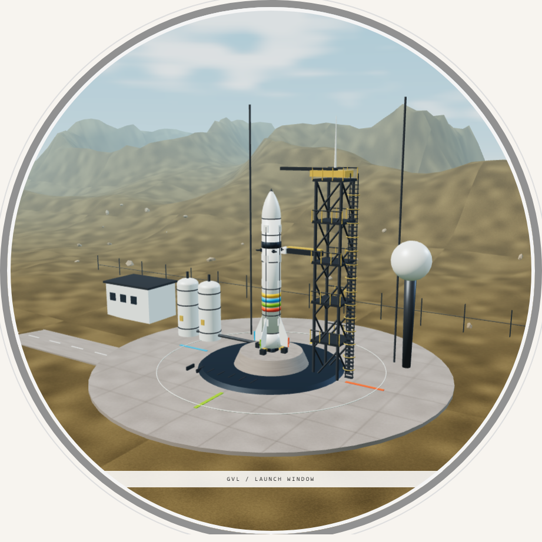

01 / Canvas 2D + Blender Cycles relief
风起壁间 · 飞天
四身原创飞天，执灯照壁、揭色离壁、巡游归位。结合 Blender 4.5 Cycles 烘焙的莫高窟四龛藻井浮雕底壁与约束飘带，构成实时壁画叙事。
入窟探索 →Code becomes a world
从一盏灯下的飞天，到真实高程塑造的火星，再到圆框中的白色火箭。原创实时画面，不是预录视频；艺术模拟与科学测量，清楚分开。

四身原创飞天，执灯照壁、揭色离壁、巡游归位。结合 Blender 4.5 Cycles 烘焙的莫高窟四龛藻井浮雕底壁与约束飘带，构成实时壁画叙事。
入窟探索 →
NASA MOLA 实测高程驱动真实几何，叠加 Blender Cycles 烘焙的无缝微地貌法线/凹腔贴图与假想海洋天气。可检查灰模、线框并导出 GLB。
进入观测台 →
由 Blender 4.5 MCP 生成的高精度白色火箭、钛合金栅格翼、五机拉瓦尔喷管与发射塔 GLB 套件。外部视角观看点火、离台与升空。
进入发射场 →每个效果都能解释：什么改变了几何，什么只是光影，什么来自测量，什么来自想象。